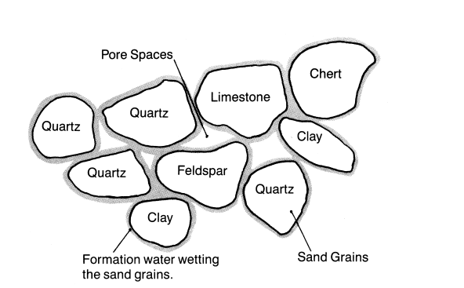
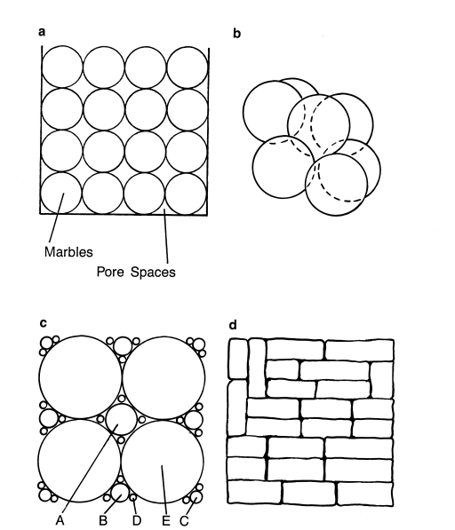
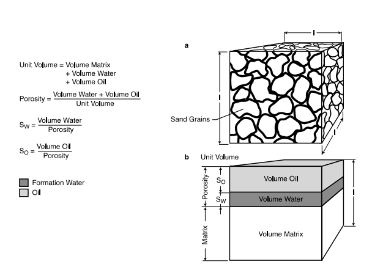
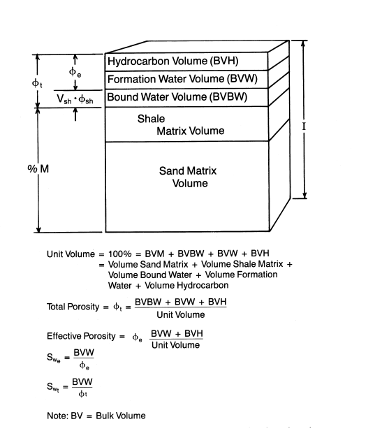
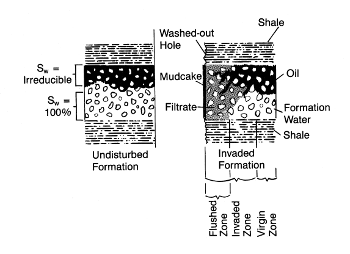
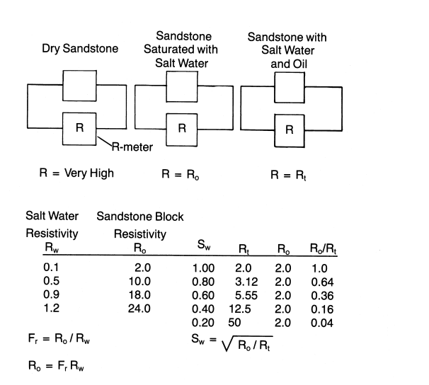
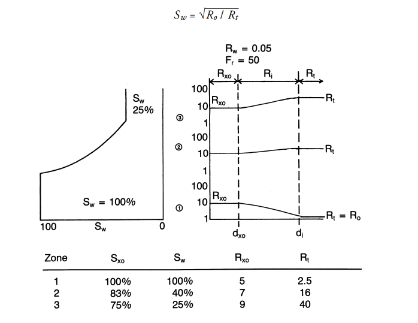

Formation Parameters
A resistivity curve is not oil. This chapter is the rock-and-fluid model the curve is standing in for: grains, pores, shale, invasion, and the Archie step from resistance to water saturation.
Learning goals
- Separate clastic, evaporite, and organic (carbonate) sediments, and say why sandstones and carbonates matter as reservoirs.
- Define porosity, then intergranular, fracture, and vugular porosity, and why sorting and grain shape change the number.
- Split a unit volume into matrix, water, and hydrocarbon, and into total versus effective porosity when shale is present.
- Sketch invasion: mud cake, flushed zone, invaded zone, virgin zone, and residual hydrocarbon.
- Use formation factor and Archie’s square-root relation to go from resistivity to water saturation.
Before a curve can be interpreted you need the setting: what reservoir rocks are, how they form, what fills them, how oil and gas sit in the pores, what a direct measurement is versus an indirect one, and resistivity—one of the oldest measurements still on the log.
Types of sediments
Oil and gas sit in sedimentary rock. Those sediments were laid down in layers on the floors of rivers, lakes, and oceans. The notes group them three ways: clastics, evaporites, and organics.
Clastics come from Greek klastos, “broken.” They are pieces of older rock. Sandstone is the usual example: grains weathered, moved by wind and water, buried, then cemented by chemistry, heat, and pressure. Sands are the most important reservoir rock. Most hydrocarbon accumulations are in them.
Grain size sorts the clastics. Sand runs from beach sand down to grains you can barely see. Conglomerate has large grains, from rice-sized pebbles to rocks bigger than a fist, and it is poorly sorted—many sizes mixed. Shale has microscopic grains and also contains clay minerals.
Evaporites drop out as salty water dries. The common ones are gypsum, anhydrite, and halite (rock salt). Halite matters to explorers because many fields, especially on the Gulf Coast, are tied to salt domes.
Organic sediments here are mostly carbonates: limestone and dolomite. They show up as very fine limestone mud (micrite), chalk from algae, and reef limestone from coral—usually the skeletons of small marine animals that sank, piled into beds often hundreds of feet thick, then were buried, compacted, and cemented. Carbonate beds are important reservoirs too.
Every sedimentary rock holds some water between the grains. That is formation water, with whatever salt is dissolved in it. It may be the water the sediment was deposited in, or later rain and groundwater, as in sand dunes.
In a sandstone the grains are cemented by carbonate, silica, or both. Because they were laid down in water or later submerged, they are normally water-wet: a film of water clings to each grain. That film is irreducible water. No matter how much oil or gas the rock holds, that film stays.

Porosity
Grains do not pack into a solid. The spaces between them are pores. Porosity is those voids as a percent of the whole rock volume. Oil, gas, and water sit in the voids. More porosity means more fluid. With none, there is nowhere for hydrocarbons to collect, and an explorer walks away.
Intergranular porosity
Intergranular porosity is the empty space between grains. Identical spheres stacked in a simple cubic pile leave about 47% pore space. That is the upper limit for a sandstone, and the packing is unstable. A reading above about 47% is not a sand. Sphere size does not change the percent if the arrangement stays the same.
Stack the same spheres like cannonballs and porosity falls to about 26%. That packing is stable, and it is the practical maximum for a well-sorted, compacted sandstone.
Mix the sizes and the small grains fill the gaps, so porosity drops. Poorly sorted sands are tight. Angular grains pack tighter than rounded ones. Rounding runs angular, subangular, subrounded, well rounded.
Well-rounded, well-sorted sand (mature, or beach sand) has high porosity and high permeability, so fluid moves and production is higher. Angular, poorly sorted sand (immature) has low porosity and low permeability.

Other types of porosity
Fracture porosity is the space along cracks, like loosely stacked bricks. The pore volume is usually only 1–2%, but permeability is often very high, so a lot of fluid can move.
Vugular porosity is common in limestones and dolomites. A vug is a large irregular hole, often where a mineral such as calcite was dissolved by moving water. Caverns are huge vugs. Fluid moves through them easily.
A formation can have one of these systems or all three. Sandstones normally have only matrix (intergranular) porosity. Carbonates often have matrix, fractures, and vugs together.
Formation analysis
Take a cube of rock and call it 100%. Solid mineral is the matrix (mostly quartz in a sand). Everything else is porosity, and the pores are always full: water, oil, or gas.
Water wets the grains first. That film is irreducible water. How much depends on grain size, permeability, and capillary pressure. Extra water can flow with the oil or gas. Oil and gas sit in the pores, kept off the grains by that water film.
Stack the cube: matrix at the bottom, then water, then oil.
BVM + BVW + BVO = 100%
Example: matrix 70%, water 10%, oil 20%. Porosity is water plus oil, here 30%.
φ = BVW + BVO = 100% − BVM
Saturation is the share of the pore space, not of the whole rock:
Sw = BVW / φ So = BVO / φ
Sw + So = 100%. With free gas, So + Sg + Sw = 100%.

Shaly formations
So far the rock was clean, with no shale. Real formations often contain shale, and that complicates the cube.
Shales and clays—used almost interchangeably here, though they differ technically—are very fine, plate-like minerals. For the same volume they have a huge surface compared with sand grains, so they bind a lot of water. Fine grains and strong capillary forces hold that water in place. Shales have essentially zero permeability and, usually, high porosity. Shale may sit in thin laminations or be scattered through the sand. Scattered shale acts almost like another “fluid” in the pores: it cuts the porosity available for movable fluids, and it cuts permeability.
Effective porosity is the pore space that can hold movable fluids. Total porosity also includes the shale pores, which are full of bound water.
In the revised cube, shale matrix joins the sand matrix (similar minerals, much finer grains), and shale porosity joins the porosity column. Effective porosity is total porosity minus the shale bound-water volume. Effective water saturation is formation-water volume divided by effective porosity.

Recap:
- Unit volume: a cube of formation, one unit on a side.
- Total porosity: the percent of that cube filled by water, oil, or gas.
- Effective porosity: that percent minus shale bound water.
- Total water saturation Swt: formation water divided by total porosity.
- Effective water saturation Swe: formation water divided by effective porosity.
Reserves estimate
Oil or gas in place needs effective porosity, oil saturation, thickness, and the area the well can drain. Recoverable reserves also need a recovery factor. For oil the notes often use about 40%, but the real factor can be much higher or lower.
Np = φe × So × h × A × rf
You recover more if porosity is higher, oil saturation is higher (water saturation lower), the formation is thicker, the drainage area is larger, or the recovery factor is higher.
Recovery factor and drainage area are estimates—spacing, seismic, lease size, or a guess, and a best case and worst case for recovery. Porosity, oil saturation, and thickness come from the logs. With a reserve number you can run the economics and see if the well pays out.
Invasion
Before drilling, the reservoir is undisturbed. The bit changes the rock a little. The mud changes it a lot.
Mud is water, suspended solids, and chemicals. It carries cuttings and, weighted with barite, keeps wellbore pressure above formation pressure so the well does not kick. If pressure is still too high, the driller weights up.
Press the mud and it splits. Filtrate is the clear liquid, usually fresher than formation water. It enters permeable rock and pushes the original fluids deeper. Mud cake is the solids left on the borehole wall. It seals the rock and stops further invasion. Cake means the rock is permeable. Whole mud stays out unless the rock is fractured or vuggy. If mud pressure breaks the rock, you get lost circulation.
In an undisturbed sand, the bottom is 100% water, the top is oil plus only irreducible water, and a transition sits between them. Oil rises because it is lighter.
After drilling, filtrate flushes near the wellbore. In the wet zone the flush is nearly complete: water replaced by water of a different salinity. If the salinities match, you cannot see the invasion. In the oil zone most of the water is displaced, but some oil stays. That leftover is residual oil Sor. Residual gas is Sgr. Either is residual hydrocarbon Shr. A rock that never held oil or gas has Shr = 0. Once it has—even if the hydrocarbons only passed through—Shr > 0. Residual oil, like irreducible water, does not move by ordinary means.

Invasion zones
Moving out from the hole:
- The flushed zone is where filtrate has pushed out everything it can. Saturation Sxo, diameter dxo, filtrate resistivity Rmf, and rock resistivity Rxo.
- The invaded zone is a mix of formation fluid and filtrate out to the end of the filtrate. Diameter di, saturation Si. Water resistivity Ri is a mix, so it usually has no single value.
- The virgin zone is past the invaded zone, undisturbed. Its resistivity is Rt and its water saturation is Sw.
With depth, the sand in the notes goes from 100% water at the bottom, through a transition, to irreducible water at the top, about 25%. Hydrocarbon saturation is Sh = 1 − Sw.
With distance from the hole:
- In the wet zone, Sxo = Si = Sw = 100%. There was never oil or gas.
- In the transition, residual oil makes Sxo less than 100%, and Si less than Sxo. Far away, Sw might be about 40%.
- At irreducible water, the contrast is largest. 1 − Sxo is close to residual oil. Saturation changes between dxo and di. Beyond di, Sw is back to irreducible.
Many bad interpretations come from not knowing how far the filtrate went.
Resistivity
Reserves need (1) porosity, (2) the fraction of pore fluid that is hydrocarbon (So or Sg), (3) thickness h, (4) recovery factor, and (5) reservoir area. Thickness is easy from logs. Area comes from seismic and offset wells. Recovery factor can only be estimated at first. Logs tell you whether hydrocarbons are there. Years of production tell you the ultimate recovery. Log evaluation measures the three things it can—porosity, water saturation, and thickness—then infers production potential. Those quantities are measured indirectly, never directly.
Direct vs. indirect measurements
A butcher does not keep a pile of pounds in the back. He sets the meat on a scale and watches a spring stretch. The stretch is proportional to weight. If the scale is calibrated, he reads pounds or grams. He weighed the meat indirectly. Engineering is the same. Direct measurement is rarely practical down the hole.
Water saturation
You cannot measure porosity or oil saturation directly in the hole. Early logs could measure only resistivity. Archie (and Doll) showed how to turn that into water saturation. Oil saturation is what is left: So = 1 − Sw.
Resistivity is how hard it is to push current through a material, in ohm-meters. Conductivity is the opposite. Copper is low, glass is near infinity, and formations sit in between.
Dry sandstone is basically glass, so it reads near infinity. On logs, sands often read below 1 ohm-m because of salty formation water. Distilled water is also nearly infinite. Dissolved salt is what conducts.
Soak a dry core in salt water of resistivity Rw. The 100% water-filled rock reads Ro. Their ratio is the formation factor:
Fr = Ro / Rw = KR / φm
KR is about 0.8 to 1, and m is about 1.3 to 2.5. F depends on porosity, because porosity sets how much water the rock holds.
Replace some of that water with oil and resistivity rises. That reading is true resistivity Rt, and Rt > Ro. The notes write Archie’s result as:
Sw = √(Ro / Rt) = (F × Rw / Rt)1/2
Near the borehole, flushed-zone resistivity Rxo is high, a bit higher where residual oil remains. Farther out, the gap between Rxo and Rt is large in a wet zone, smaller in the transition, and small where water is already irreducible. Rxo is usually higher than Rt, unless the mud is very salty or Sw is very low. Because invasion depth is unknown, resistivity tools read at several depths.


Key terms
- Porosity φ
- Pore volume as a percent of the rock.
- Irreducible water
- The water film that stays on water-wet grains.
- Sw, So
- Water and oil as fractions of the pore space.
- φe vs φt
- Movable-fluid porosity versus porosity that also counts shale-bound water.
- Filtrate / mud cake
- Liquid that invades permeable rock, and the solids left on the wall.
- Sxo, Rxo
- Saturation and resistivity in the flushed zone.
- Rt, Rw, Ro
- True resistivity, formation-water resistivity, and resistivity of the rock at 100% water.
- Formation factor
- F = Ro / Rw, set by porosity.